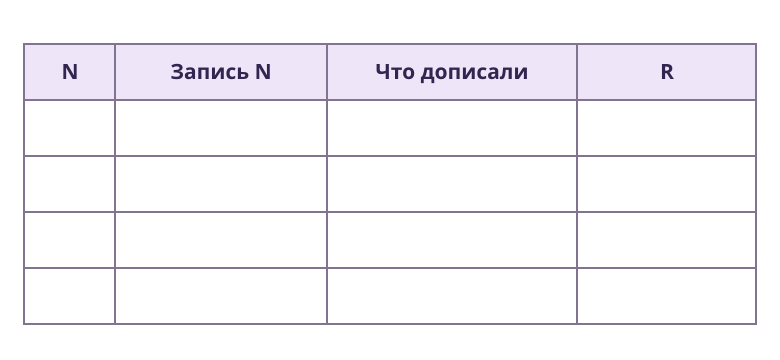

Имя: ____________________ Дата: ____________________

1N — положительное целое число. Если N чётное, дописываем справа 01; если нечётное — 10. Полученную двоичную запись переводим в десятичное число R. Найди наименьшее N, при котором R > 53. Ответ запиши в десятичной системе.
Ответ и проверка: __________________________________________
2N — положительное целое число. Дважды подряд дописываем справа остаток от деления числа единиц в текущей записи на 2. Второй раз пересчитываем единицы после первой дописки. Полученную двоичную запись переводим в десятичное число R. Найди наименьшее значение R, строго большее 24. Ответ запиши в десятичной системе.
Ответ и проверка: __________________________________________
3N — положительное целое число. Если N делится на 3, дописываем справа 00. Иначе дописываем справа двоичную запись удвоенного остатка N от деления на 3, без ведущих нулей. Полученную двоичную запись переводим в десятичное число R. Найди наименьшее значение R, строго большее 45. Ответ запиши в десятичной системе.
Ответ и проверка: __________________________________________